Oggy is a Switch agent
Oggy registers with Switch's agent protocol and stays connected over one live connection. In any room it's just another member: @oggy. Its setup even connects itself to Switch Console on your PC.
Hold your Wispr Flow key and say it, or press Ctrl + Space and type. Oggy opens your apps, sorts your files, clears your inbox into a to-do list and runs a whole team of coding agents. Anything risky waits for your yes.
Free & open source · Windows 10 / 11 · 64-bit


voice
Oggy listens through Wispr Flow, which turns your voice into text wherever your cursor is. Hold its key, talk like you'd talk to a person, let go. Oggy works out what you meant, even with a few wrong words, and gets on with it.
No microphone? Just type in the same box.
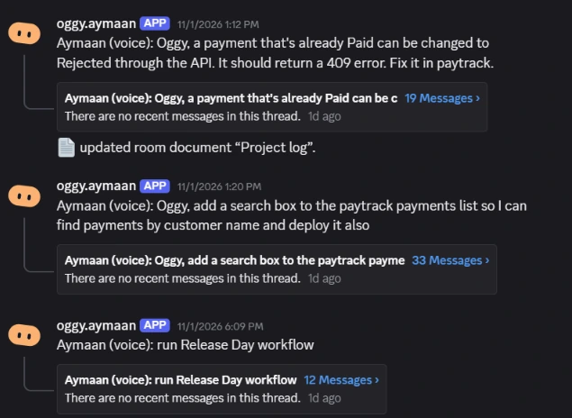
what it does
A team of coding agents, each with one job: Scout finds the cause, Frontend and Backend fix it, Tester proves it, Reviewer checks it, Release ships it after a team vote.
Oggy, fix the 500 on huge payment amounts in paytrack

Open and close apps, open folders, move, rename and zip files, take screenshots, change the volume. The Assistant reads your Gmail and Calendar and writes to-dos in Notion.
Take a screenshot and open my Downloads

Describe a routine once, like "check my mail and make a to-do list in Notion", and Oggy saves it. After that, its name is all it takes, or a time like "every weekday at 9am".
Run todo workflow
Speak with Wispr Flow, type in Ctrl + Space, or post in your Discord room.
A quick PC task, a job for the coding team, or one of your workflows. Oggy plans the steps.
Anything risky waits for your yes. Shipping waits for the whole team's.
On your desktop and in Discord: what was done, and what it couldn't confirm.
Switch puts people and AI agents in shared rooms and bridges those rooms to Discord, Slack, Teams and more. Oggy is a Switch agent that coordinates the others: you talk to Oggy, and Oggy runs the team through Switch.
Oggy registers with Switch's agent protocol and stays connected over one live connection. In any room it's just another member: @oggy. Its setup even connects itself to Switch Console on your PC.
The coding team are agents you add in Switch Console. Oggy sends each one its step as a targeted message and waits for DONE: or BLOCKED: before the next.
Oggy creates a Switch room per project, keeps them in a Projects room group linked to your team room, sets up the agents' roles, and attaches the project's GitHub repo as a reference.
What you asked, every hand-off, each question, the approvals and the result stay in one thread, so jobs never mix and the room reads like a log of work.
Switch's Discord bridge turns each room into a channel. Your team watches the work, votes yes or no on releases, and talks to @oggy from Discord.
Oggy keeps a Project log and a Workflows list as Switch room documents. The next job reads what earlier jobs changed and decided, so nobody redoes work.
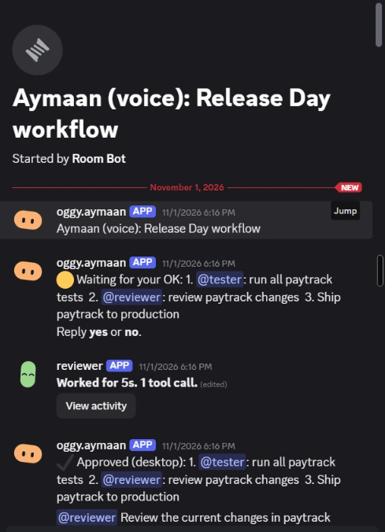
A real Switch thread in Discord. Oggy asks for your OK, you approve, and Oggy hands the steps to @tester and @reviewer. Every agent posts back in the same thread.
coding team
Each request becomes a job on the board. Jobs move from Queued to Working to Done on their own, and anything waiting on you (an approval, a question, a step that hit a problem) lands in Needs you.
you stay in charge
Oggy writes a plan, who does what and in what order, and shows it before any agent starts. Say "yes", click Allow, or stop it right there.
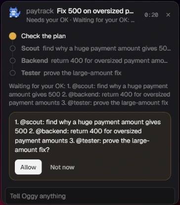
the team
Scout only reads and explains. Frontend never touches the backend. Tester only changes test files. Reviewer answers LOOKS GOOD or CHANGES NEEDED. Release ships after a team vote. Assistant handles your mail, calendar and notes.
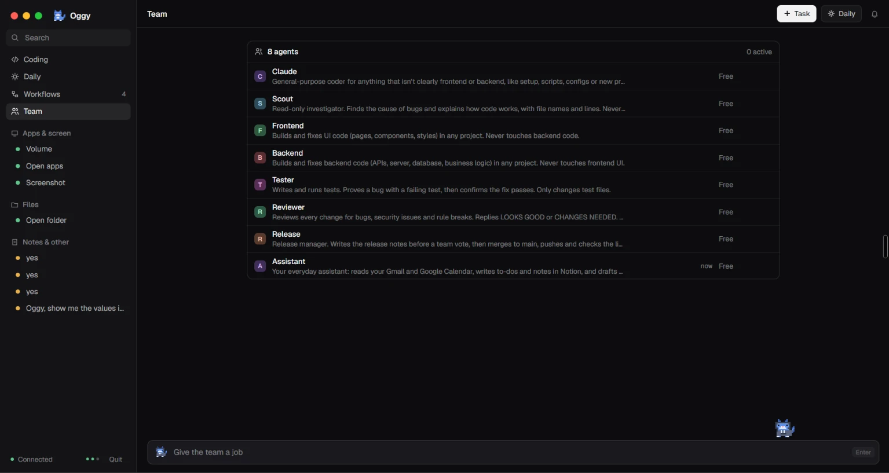
workflows
Describe a routine in a sentence and Oggy saves it: which agents, in what order, and where it stops for your OK. Then just say run Release Day workflow. Every run is kept, so you can see what passed and what failed.
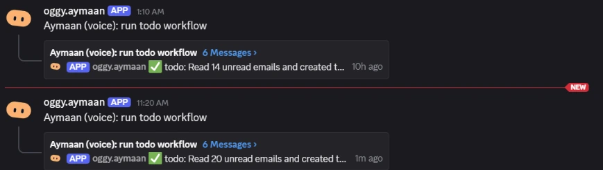
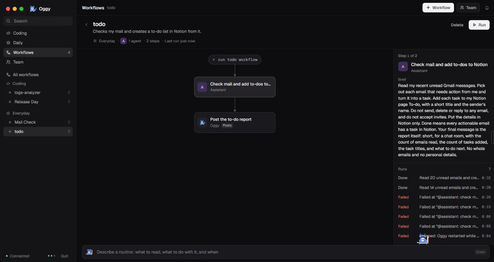
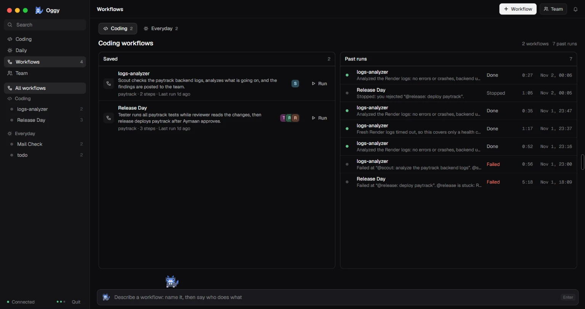
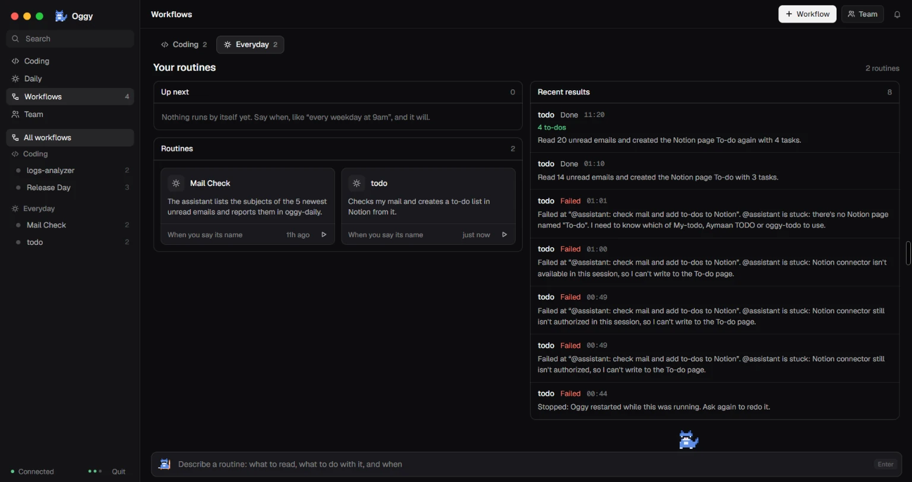
discord
Each job is posted to your project's Discord channel as its own thread. Anything that can't be undone, like merging to main and deploying, waits until everyone on the project replies yes.
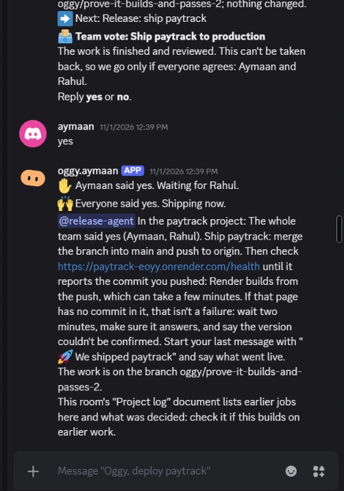
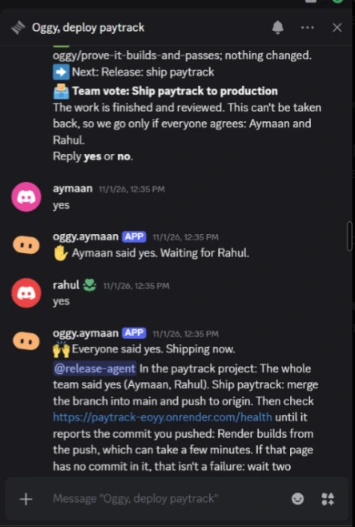
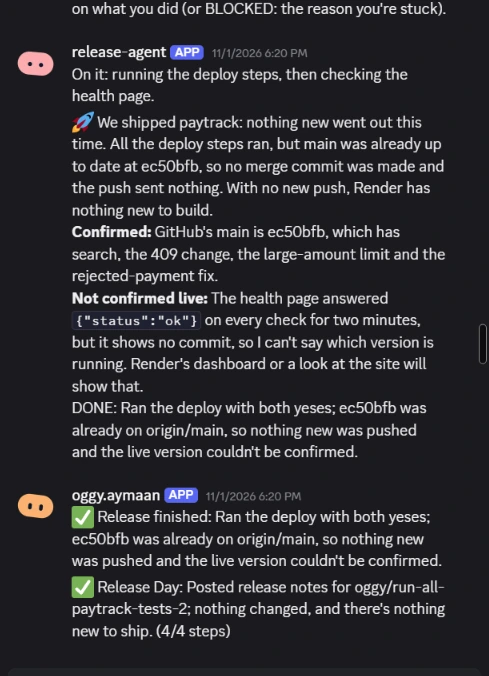
everyday
Ask for the small things out loud: a screenshot, a folder, mute the sound, move these files, open VS Code. The Assistant reads your unread mail and turns what needs action into a Notion to-do list. Oggy refuses what it shouldn't do: it won't open a .env file, for example, and deleting always asks first.
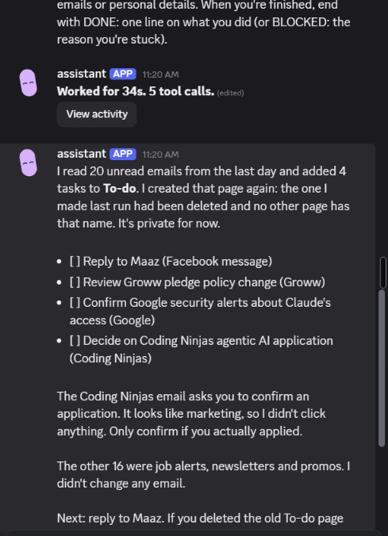
Install Oggy, add Wispr Flow for voice, and tell your PC what to do.
Oggy-Setup.exe · Windows 10 / 11 · 64-bit · Needs Switch Console